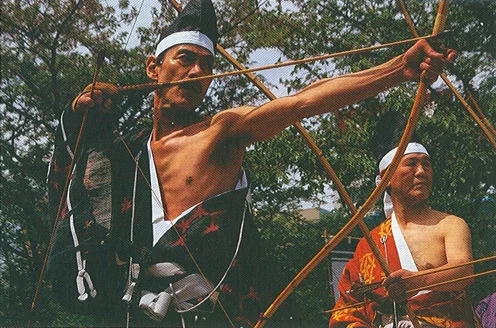

***
*** . . . A TÖLTÉS TECHNIKÁJA
************
... A töltés az a mozdulatsor, melynek eredményeként a nyilvessző a nyiltegezből az íj húrjára kerül. Minél letisztultabb, minél kevesebb fölösleges elemet tartalmaz, annál gyorsabban. Az íjász lőgyorsasága legnagyobb részben töltéstechnikáján múlik. ...
************
... Mivel sokakat foglalkoztat mind a töltés technikájához tartozó tárgyak (tegezek), mind, pedig a hagyományos íjhasználat vonatkozó technikai bázisa, ezek azonosítása és rekonstrukciója, így magától értetődőnek tekinthetjük, hogy e témakörökben számos - gyakran egymásnak ellentmondó - írás, elmélyült és felületes szakértői vélemény forog közkézen.
Ebben a fejezetben az ilyenfajta teóriák, feltételezések és fikciók realitását fogjuk mérlegelni, továbbá saját gondolataimat igyekszem majd az említettekkel összevetni. Mindezek megbízhatóbb értékeléséhez a rendelkezésre álló információkról, azok feldolgozásáról és a gyakorlati tapasztalatokkal való párhuzamba állításukról is szükségesnek tartottam néhány gondolatot közölni. ...
************
Az ábrázolások vizsgálata
A korabeli ábrázolások vizsgálata nem olyan egyszerű, mint ahogy azt sokan gondolják. Nem csupán az alkotások megtekintését nevezzük vizsgálatnak. Még csak azt sem, hogy tartalmuk szerint csoportosítva elkülönítjük őket, és kiemeljük közülük az elméleteinket alátámasztó műveket, az elméleteinket gyengítőktől pedig eltekintünk. Aki ilyen módszerekkel dolgozik, az nem ismereteket gyűjt, hanem általában bizonyítani akar, méghozzá meglehetősen dilettáns, tudománytalan módon. Persze ez a módszer is eredményre vezetne, ha például a hagyományos magyar íjásztechnika kérdésében, mondjuk, különböző oktatókönyvek illusztrációit kellene összehasonlítanunk. Ilyen azonban egyetlen egy sem áll rendelkezésünkre, ...
************

... A japán harcosokat emellett mégis nagyra becsülték az "íj és ló útján" szerzett jártasságukért. A szamurájok íja csaknem azonos volt a mai kjúdóban használatos íjakkal. Rendkívül nagy méretű, testmagasságnál is jóval hosszabb fegyver volt. Valamiféle lombhullató fából készült, melyet külső oldalán bambuszréteggel erősítettek meg. További bambuszréteg hozzáadásával növelték a teljesítményt. A rétegeket összetartó ragasztó gyenge minősége miatt az íjakat nádháncsokkal is meg kellett erősíteni. A ragasztónak árthatott a nedvesség, ezért a teljes külső felületet lakkal vonták be. A nyilvesszőt az íjhúr alsó harmadáról lőtték ki. A húrkészítéshez is növényi eredetű anyagokat használtak. Kender vagy hócsalán rostjaiból sodorták. Ezt viasszal vonták be, ami kemény és sima felszínt adott. ...
***************
... vajon mi olyan magával ragadó a japánok íjászhagyományaiban? Talán a nagyfokú különbözőség, vagy a sok száz esztendő távlatából felelevenedő, múltba visszavezető ősi mozdulatok? Nem valószínű. Ha valóban ezek jelentenék a vonzerőt és a késztetést egy különleges, nagy múltú íjásztechnika elsajátítására, akkor ez a technika lehetne az indiánoké, vagy akár az afrikai kontinens kőkorszaki szinten megrekedt vadászaié is. Ez utóbbi már a múlt elég nagy távlataiban gyökerezik. Meghonosítása pedig semmivel sem lenne ellentmondásosabb itt, Európa közepén, mint a japán hagyományoké. Csakhogy van egy óriási különbség. A japánok teljes mértékben tisztában vannak saját hagyományaikkal. Megvannak hagyományaikat őrző, továbbhagyományozó iskoláik és mestereik. Méghozzá akkora létszámban, hogy azok szétrajzottak az egész világon, és mindenütt kínálgatják portékájukat. Ahol állhatatos kínálat van, ott pedig előbb-utóbb létrejön a kereslet is. A kereslet azonban többnyire független az árú minőségétől és eredetétől. . Ki ne ismerné a kjudot, vagy legalább ne hallott volna róla? A jabuszame (lovas íjászat) viszont már nem lesz ilyen népszerű. A kiváló magyar lovasíjászok tettek róla, hogy ez a tevékenység Magyarországon - az eredményesség tekintetében - legfeljebb paródiaként lesz bemutatható. Képviselőik pedig csak tanulni jöhetnek, tanítani semmi esetre sem. Biztosra veszem, hogy mindez gyalogos vonatkozásban is elérhető.
Ha az íjásztechnikájukat nem is, azért van mit tanulni a japánoktól. Méltóak mindannyiunk tiszteletére, mert példamutatóan tisztelik és őrzik hagyományaikat. Nekünk is ezt kellene tennünk! Saját fegyvereinkkel, saját felszerelésünkkel, saját technikáinkkal. ...